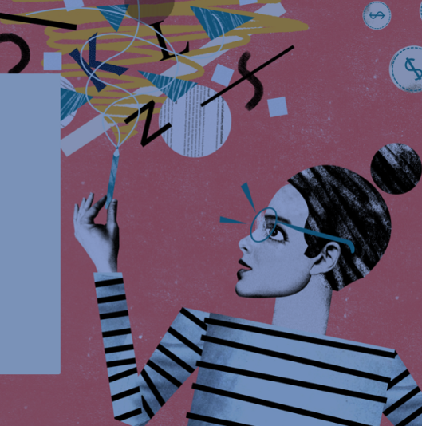

PROYECTOS

1
We
leave
UX / UI. App / gamificación, bajo la temática de wellness, para dejar de fumar de una manera distinta a la habitual: en grupo.
Ver proyecto
2
Libros
Traperos
UX / UI. Web y app de estilo e-commerce para la librería de segunda mano de la asociación Traperos de Emaús

Ver proyecto


3
Me
dium
UX / UI. Introducción de una nueva funcionalidad que permite segmentar contenido académico y cronológico en la app del blog Medium
Ver proyecto
4
Museo
del Prado
UX. Diseño de una solución para que el Museo del Prado digitalizase sus servicios de una manera rápida y accesible
Ver proyecto